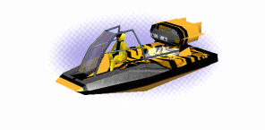
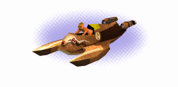
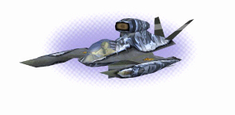
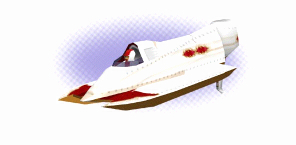
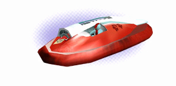
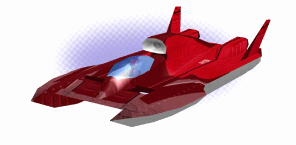
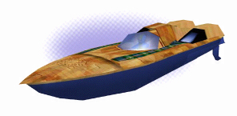
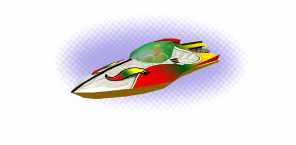

|
The 8 ships of WaterRace
OK, actually, there are 9 ships in WaterRace, but the ninth is a Leah's secret ship, so you will have to figure out by yourself how it looks like!
|

|
Airboat
It replaces the car in Florida swamps. This sort of boat with a flat bottom and a big propeller is a very weird vehicle. Its performances are slightly inferior to the ones of the hovercraft (in terms of speed and handiness). Still, it is quite easy to drive.
Length : 8.2 m - Width : 3 m - Height : 2.7 m - Mass : 800Kg
Propulsion type : Air propellor - Top speed with turbo : 164 Kmh (102 Mph)
Max engine power : 100HP - Turbo engine power : 800HP
|

|
Cow Boat
The cow boat is the outsider...it doesn't look like anything seen before and doesn’t seem very interesting for a novice eye. Although it is very difficult to master, once you have the skills it very fast and handy on any kind of terrain.
Length : 5.4 m - Width : 2.6 m - Height : 1.3 m - Mass : 500 Kg
Propulsion type : Water propellor - Top speed with turbo : 174 Kmh (108 Mph)
Max engine power : 900 HP - Turbo engine power : 500 HP
|

|
Drag Boat
Carrying the latest technologies, the dragboat can reach speeds never seen before. Only a few masters can tame that monster.
Length : 6.1 m - Width : 4.4 m - Height : 1.7 m - Mass : 1900Kg
Propulsion type : Air propellor - Top speed with turbo : 247 Kmh (153 Mph)
Max engine power : 1600HP - Turbo engine power : 1200HP
|

|
Formula 1
The Formula 1 rightly ranks at the top of the inshore contests. This catamaran has a carbon fiber body and a 10-liter, V6 engine powers it. Accelerations are unbelievable, and maximum speeds can reach 190 Km/h.
However, be careful: this power engine is not so simple to navigate!
Length : 6.7m - Width : 2.1m - Height : 1.1m - Mass : 350Kg
Propulsion type : Water propellor - Top speed with turbo : 169 Kmh (105 Mph)
Max engine power : 750HP - Turbo engine power : 400HP
|

|
Hovercraft
Yes, people use that for racing ! It is quite fast, not so handy but very efficient (especially if you want to use short tracks...)
Length : 5.9 m - Width : 2.5 m - Height : 1.2 m - Mass : 1200 Kg
Propulsion type : Air propellor - Top speed with turbo : 179 Kmh (111 Mph)
Max engine power : 1600HP - Turbo engine power : 1000HP
|

|
Hydroplane
This one is the biggest ship of WaterRace. The Hydroplane is a real offshore machine and ranks among the fastest watercrafts of the game.
However, speed does not go well with handiness, which means the Hydroplane is very difficult to master mainly because of its size.
Competitors love it, but only confirmed or somewhat crazy pilots can tame it.
Length : 6.4m - Width : 3.6m - Height : 1.4m - Mass : 1900Kg
Propulsion type : Water propellor - Top speed with turbo : 219 Kmh (136 Mph)
Max engine power : 1600HP - Turbo engine power : 800HP
|

|
Offshore Racer
As its name suggests, the offshore racer is designed for the sea but still, it is quite efficient on big lakes. It is quite handy but the pilot needs to be very skilled.
Length : 8.7 m - Width : 2.3 m - Height : 1.3 m - Mass : 1500 Kg
Propulsion type : Water propellor - Top speed with turbo : 212 Kmh (132 Mph)
Max engine power : 1700HP - Turbo engine power : 500HP
|

|
Speed Boat
The speed boat can be compared to the Formula1. They have the same type of engine. Still, the speed boat is slightly faster and easier to handle. In good hands it is a very good boat on any kind of terrain…do not underestimate it !
Length : 4.3 m - Width : 1.9 m - Height : 0.9 m - Mass : 700Kg
Propulsion type : Air propellor - Top speed with turbo : 154 Kmh (96 Mph)
Max engine power : 600HP - Turbo engine power : 400HP
|